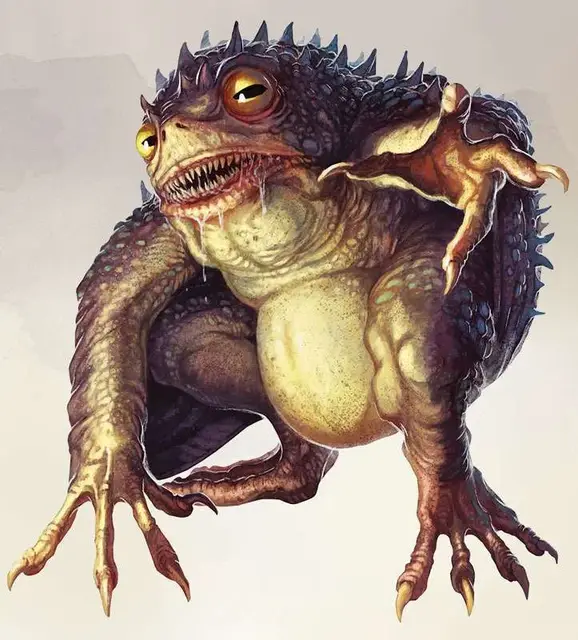

Гидролот
Hydroloth
Среднее Исчадие (Юголот), обычно нейтрально-злое

Класс Доспеха 15
Хиты 135 (18к8 + 54)
Скорость 20 футов, плавая 40 футов
| мод | спас | ||
|---|---|---|---|
| СИЛ | 12 | +1 | +1 |
| ЛОВ | 21 | +5 | +5 |
| ТЕЛ | 16 | +3 | +3 |
| мод | спас | ||
|---|---|---|---|
| ИНТ | 19 | +4 | +4 |
| МДР | 10 | +0 | +0 |
| ХАР | 14 | +2 | +2 |
Навыки Восприятие +4, Проницательность +4
Уязвимость к урону огонь
Сопротивление урону холод, электричество; дробящий, колющий, рубящий от немагических атак
Иммунитет к урону кислота, яд
Иммунитет к состояниям отравление
Чувства слепое зрение 60 футов, тёмное зрение 60 футов, пассивное Восприятие 14
Языки Бездны, Инфернальный, Телепатия 60 фт.
Опасность 9 (5000 опыта)
Бонус мастерства +4
Особенности
Амфибия. Гидролот может дышать на воздухе и под водой.
Сопротивление магии. Гидролот совершает с преимуществом спасброски от заклинаний и прочих магических эффектов.
Защищённая память. Гидролот невосприимчив к водам реки Стикс также, как и к эффектам кражи или изменения воспоминаний, а также к попыткам прочитать его мысли.
Преимущество в воде. Будучи погруженным в жидкость, гидролот совершает броски атаки с преимуществом.
Действия
Мультиатака. Гидролот совершает две атаки Укусом или Когтями. Он может заменить одну из атак Использованием заклинания.
Когти. Рукопашная атака оружием: +9 к попаданию, досягаемость 5 фт., одна цель. Попадание: 14 (2к8 + 5) урона силовым полем плюс 9 (2к10) урона психической энергией.
Укус. Рукопашная атака оружием: +9 к попаданию, досягаемость 5 фт., одна цель. Попадание: 16 (2к10 + 5) урона силовым полем плюс 9 (2к10) урона психической энергией.
Использование заклинаний. Гидролот накладывает одно из следующих заклинаний, используя Интеллект в качестве базовой характеристики (Сл спасброска от заклинаний 16):
• Неограниченно: тьма [darkness], обнаружение магии [detect magic], рассеивание магии [dispel magic], невидимость [invisibility] (только на себя);
• 3/день каждое: власть над водами [control water], корона безумия [crown of madness], ужас [fear], внушение [suggestion].
Кража памяти (1/день). Гидролот выбирает целью существо, находящееся в пределах 60 фт. от него, которое он может видеть. Цель получает 14 (4к6) урона психической энергией, и она должна совершить спасбросок Интеллекта Сл 16. В случае успеха цель становится невосприимчива к Краже памяти гидролота на следующие 24 часа. В случае провала цель теряет все владения, не может накладывать заклинания, не понимает языков, а значение её Харизмы и Интеллекта, которые были выше 5, становятся равны 5. Каждый раз, когда цель совершает продолжительный отдых, она может повторять спасбросок, заканчивая эффект в случае успеха. Заклинания высшее восстановление [greater restoration] и снятие проклятья [remove curse] могут завершить эффект на цели.
Телепортация. Гидролот магическим образом телепортируется в свободное пространство в пределах 60 фт. от себя, которое он может видеть.
Описание
Подобно той природе, как и сама Река Стикс, в которой они обитают, гидролоты крадут мысли существ, которых они атакуют, забирая мысли для передачи любому хозяину, которому они служат. Гидролоты также умеют находить потерянные вещи, особенно те, что уже давно лежат в морской глубине.
В подводных конфликтах и нападениях, гидролотам нет равных среди прочих юголотов. Иногда они нанимают самих себя для нападений и ограблений на корабли, а также для совершения набегов на прибрежные поселения.